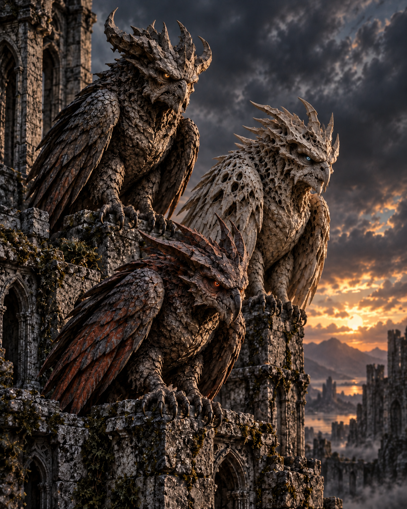

FORM
Three Hovering Figures
Their strange appearance makes them impossible to ignore, even when Kevin would very much prefer to.

ECHOES, GUIDES OR SOMETHING ELSE
“Too big. Too close. Too Kevin.”
Irritating. Unsettling. Mysterious. Occasionally useful. Aoki, Bijl and Chidiac appear to reflect Kevin, Paul and Nivek—although they know far more than reflections should.
WHO ARE AOKI, BIJL AND CHIDIAC?
Aoki, Bijl and Chidiac are three hovering figures who appear when Kevin's journey is already confusing enough. Their gargoyle-like faces do little to make them seem friendly.
They seem to echo Kevin, Paul and Nivek, but they are not simple copies. They watch, comment and interfere, sometimes offering help and sometimes making a dangerous moment feel even stranger.
Kevin is never entirely sure whether they are guides, spirits or something created by forces he does not yet understand. What matters is that they appear to know things they should have no possible way of knowing.
AT A GLANCE
FORM
Their strange appearance makes them impossible to ignore, even when Kevin would very much prefer to.
NATURE
They may be echoes, guides or something else entirely. None of them seems interested in giving a simple answer.
TALENT
The three sometimes reveal information that Kevin needs, raising more questions about where that knowledge comes from.
EFFECT
Danger is difficult enough without three mysterious figures hovering nearby and offering their own opinions.
STORY APPEARANCES
Aoki, Bijl and Chidiac are introduced in The Four Rings, where their arrival makes Kevin's already impossible journey even harder to explain.
THE PEOPLE THEY REFLECT
Their connection to Kevin, Paul and Nivek is obvious enough to notice, but not simple enough to understand.

THE BOY THEY FOLLOW
Kevin can see and hear the figures, which means he also has to endure their advice, arguments and interruptions.

THE FATHER THEY ECHO
One of the trio appears to reflect Kevin's dad, adding another unsettling connection Kevin cannot explain.

THE ALIEN THEY ECHO
Their apparent link to Nivek suggests that the three are connected to more than Kevin's imagination.
THREE ANSWERS. EVEN MORE QUESTIONS.
Aoki, Bijl and Chidiac may help Kevin survive, but every answer they provide leaves another mystery behind. With these three, even good advice can be slightly worrying.
Meet the Rest of the Cast